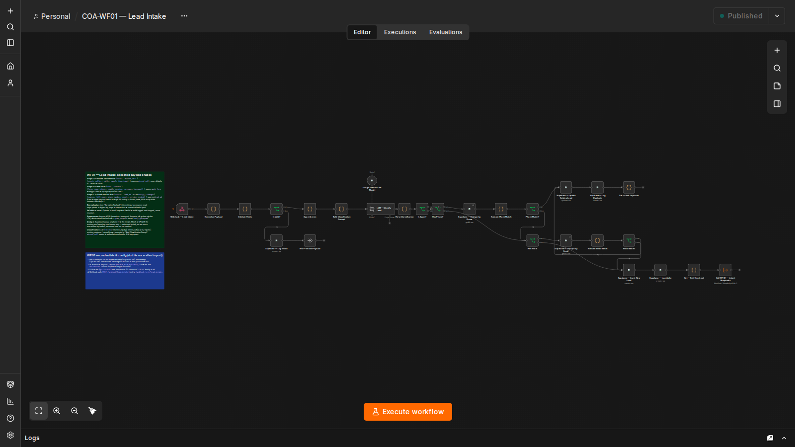
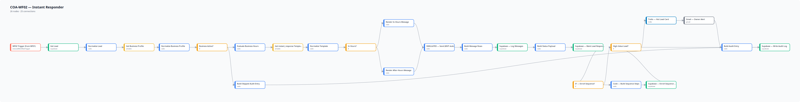
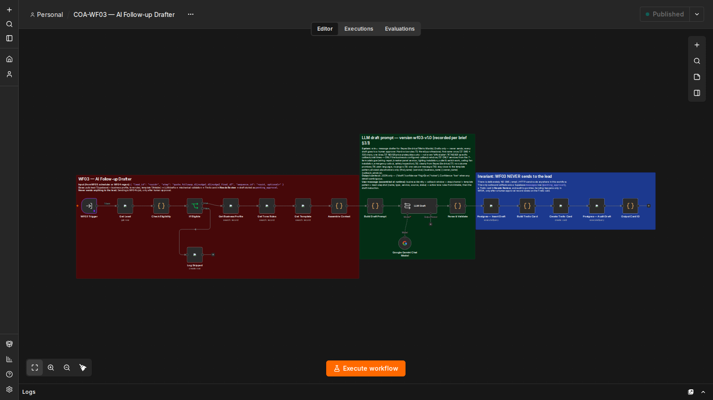
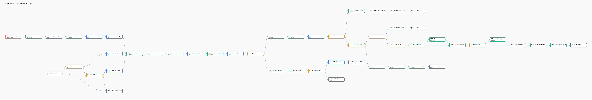
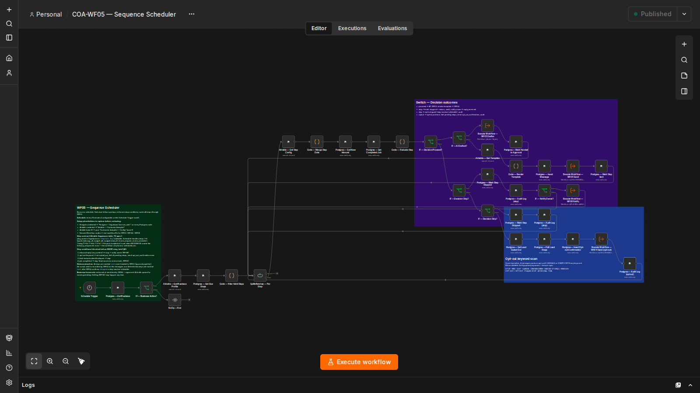
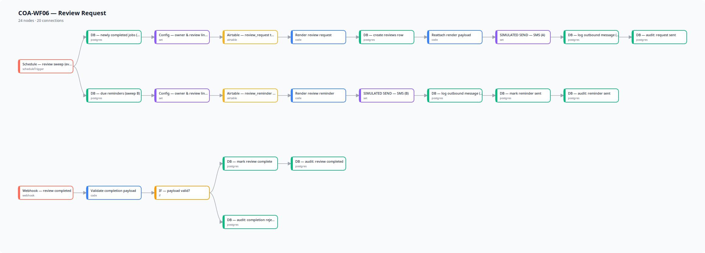
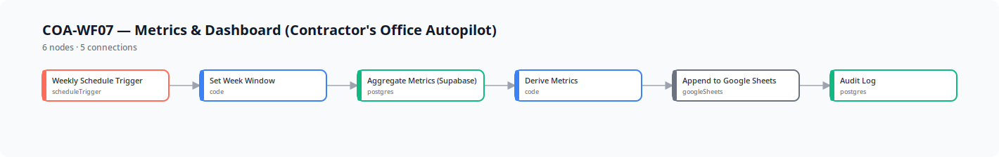
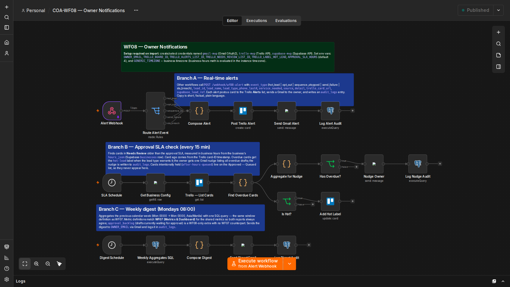

Contractor's Office Autopilot
target: Reyes Electrical (fictional demo business)
input: the problem
Trade businesses lose jobs because missed calls and web inquiries don't get an instant response, quotes go unfollowed, and happy customers are never asked for reviews. After-hours leads go cold before the office opens.
output: the system
An AI-assisted lead response and follow-up system: every new lead gets an instant acknowledgment within minutes, quotes get automatic well-timed follow-ups, and completed jobs trigger review requests — with the owner approving every AI-drafted message before anything goes out.
Lead Intake
New leads arrive via webhook; each is validated, deduped, and classified before anything else runs.

full size ↗Instant Responder
Business-hours-aware templates fire within minutes; after-hours leads get a morning follow-up queued.

full size ↗AI Follow-up Drafter
Gemini drafts tone-matched follow-ups from lead context; every draft lands in Trello awaiting approval.

full size ↗Approval & Send
The owner approves, edits, or rejects each draft in Trello; every decision is audited.

full size ↗Sequence Scheduler
Day 1·3·7 follow-ups fire on schedule; the sequence stops the moment the customer replies or opts out.

full size ↗Review Request
Completed jobs trigger a review request, with one polite reminder — then it stops.

full size ↗Metrics & Dashboard
Weekly performance summary compiled to Sheets: leads, sends, replies, reviews.

full size ↗Owner Notifications
Hot-lead alerts and the weekly digest go out via Gmail; nothing urgent gets buried.

full size ↗architecture
- Supabase is the system of record — leads, messages, sequences, reviews, audit log.
- Airtable holds human-friendly config: templates, sequence timing, business hours, tone.
- Trello is the approval gate — no AI-drafted message sends without a human record.
- Stop-on-reply & opt-out handling built into the sequence engine.
- Guardrails: drafts are validated — no prices, no time commitments, no invented services.
tech stack
 n8n
n8n Supabase
Supabase Airtable
Airtable Trello
Trello Google Sheets
Google Sheets Google Gemini
Google Gemini
▶ Try the Interactive Simulation 📸 Trello / Airtable / Email Samples
// the simulation runs 100% in your browser with fictional lead data — it is not connected to any live system
// scope: 8 workflows · verified live end-to-end 2026-10-08 · simulated lead events (real SMS provider integration designed as a future phase)